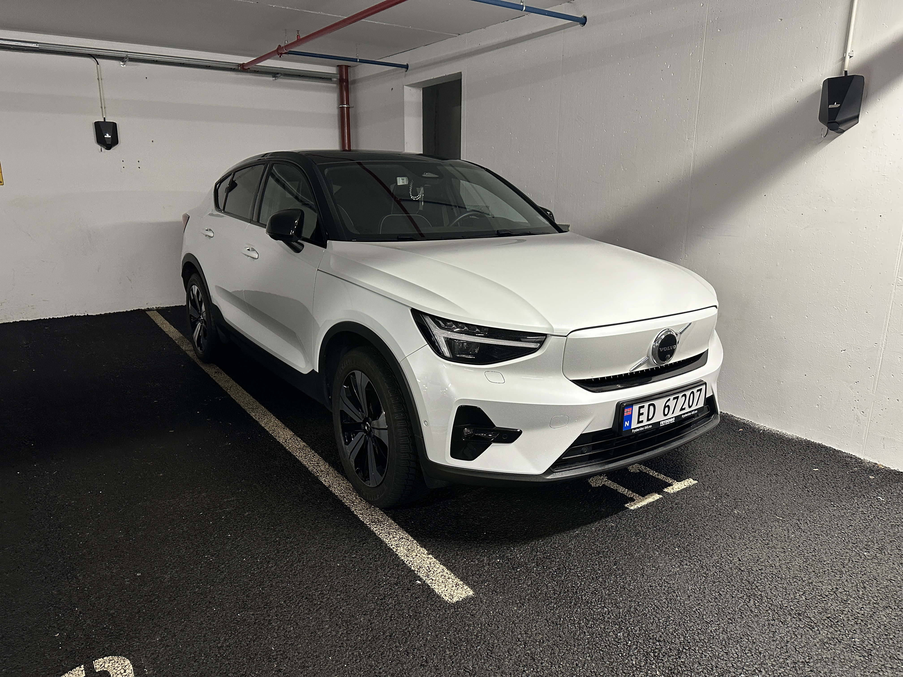

Personlig bilprofil · erfaringsanslag · ingen live telemetri
Volvo C40 – hverdagsbruk og erfaringer
En personlig oversikt over bilen, med bilde og et erfaringsbasert rekkeviddeanslag. Siden viser ikke bilens aktuelle batterinivå eller live ladedata.

Rekkevidde
Status
Om rekkeviddeanslaget
Omtrent 30 mil er et praktisk erfaringsanslag, ikke et WLTP-tall. Temperatur, fart, dekk, last og kjøreforhold påvirker resultatet.
Bilprofil
Bilprofilen er et personlig prosjektarkiv. Ingen Volvo-konto eller biltelemetri er koblet til siden.
Før en langtur
Se bilens eget rekkeviddeanslag og planlegg lading med margin. Bruk aktuell rute og vær, ikke bare tallet på denne siden.
Sammenlign ladekostnader
Skill hjemmelading og hurtiglading. Pris per kWh og energitap gjør at samme tur kan koste ulikt.
Strøm og transport
Strømsiden viser en separat demonstrasjon med eksempeldata. Den er ikke koblet til bilen.